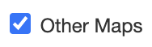
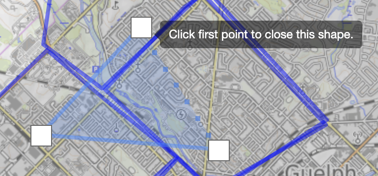
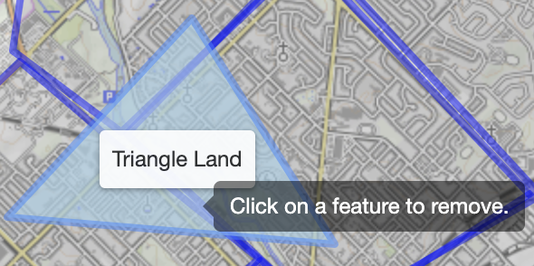
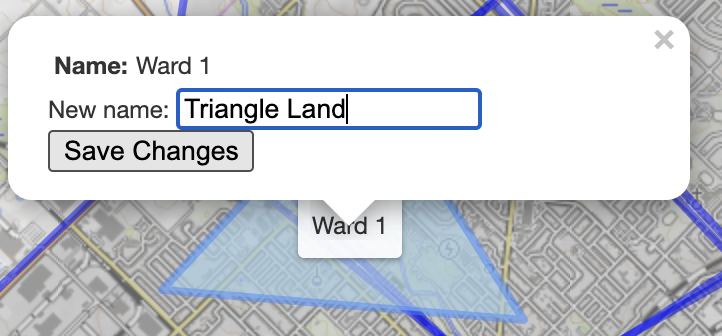
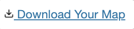

The City of Guelph is undergoing a process to revise the boundaries of its wards.
What do you think Guelph's neighbourhoods are?
You can turn on / off the maps already made by others by selecting this checkbox.

Currently what's shown on the map is Guelph's existing ward boundaries.
Use these buttons to start drawing wards. You can create:
Polygons - click on the map to begin drawing out the borders of each ward. Complete the shape by clicking on the first point you made.

Rectangles - click on the map and drag your cursor to make the rectangle or square bigger.
If you want to edit the shape of a neighbourhood you already drew, use the edit button.
You can also delete things you've drawn:

To change the name of a ward, click on it and change the text.

Be sure to click save. Call the neighbourhoods whatever you want!
Finally, take a screenshot of your map and share it! You can also download your map and submit it here to contribute this project. Your map will eventually appear as part of the "Other Maps" layer.

Your map contribution can be made completely anonymously as long as you don't name any neighbourhoods after yourself! We are not collecting any personal information whatsoever. This project does not have a research component and has not been authorized by the Research Ethics Board of the University of Guelph.